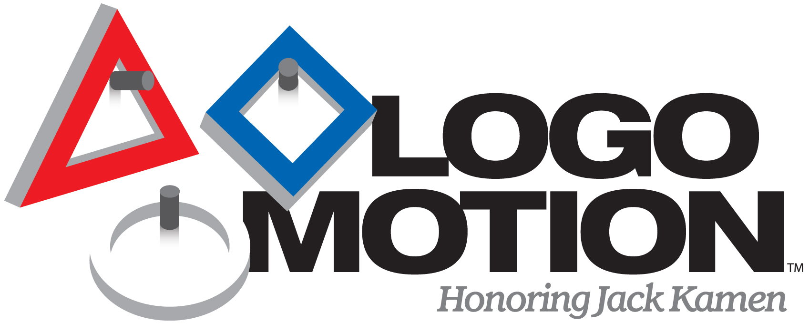

Welcome to the Team Synergy website!
Team Synergy is the FRC team for the Woodhaven-Brownstown School District. We started in 2011, which is this year. That makes this year our rookie year. Team Synergy tries to inspire creativity and engineering in our students, who are tasked with building a robot to participate in the First Robotics Competition.
This year's FRC game is called Logomotion. It requires robots to place game pieces shaped like the First logo onto pegs. At the end of the game, the robot deploys another robot to climb a pole.